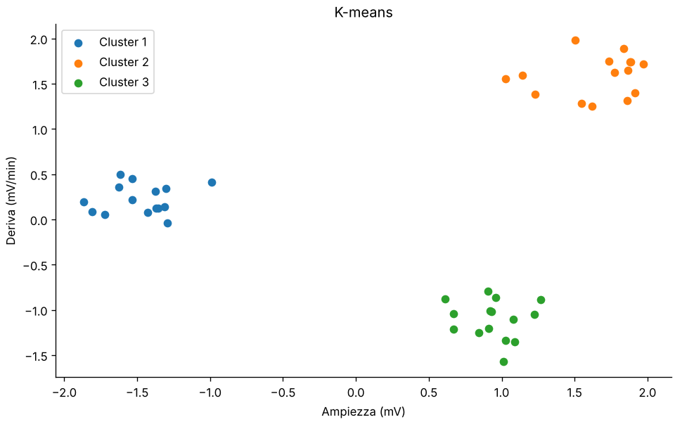

Guida di Trama
Dalla domanda al risultato che puoi riportare.
Quattro guide per chi lavora con misure sperimentali: scegli l’analisi, eseguila in Trama, leggi i numeri e scrivi i metodi. Ogni esempio ha dati sintetici e un progetto che si riapre.

Capitolo pilota · StatisticaScegliere il numero di gruppi con K-means45 segnali sintetici, tre soluzioni a confronto, un caso limite sulle unità di misura.Com’è fatto un capitolo
- Domandadal tuo lavoro
- Quandoe quali assunzioni contano
- DatiCSV e progetto .alab
- In Tramacomandi veri
- Risultatonumeri e un caso limite
- Riportafrase, versione, fonti
Capitoli pronti
- Confrontare più condizioni con ANOVA · Statistica
- Scegliere il numero di gruppi con K-means · Statistica
- Risalire alla concentrazione dalla risposta · Curve e calibrazione
- Creare una colonna calcolata · Dati e formule
- Esportare una figura vettoriale · Grafici e report
36 capitoli in quattro guide · 5 pronti · 6 nella prossima tranche
Nessun capitolo per «». Prova con un metodo (ANOVA, Cox), con quello che vuoi fare (confrontare gruppi, esportare una figura) o con una parola più corta.
Statistica
Scegliere e interpretare il metodo, dai confronti fra gruppi alle analisi multivariabili e di sopravvivenza.
15 capitoli · 2 pronti
- Descrivere un campioneProssima trancheEsempio: Tempi e intensità con una misura mancante
- Interpretare un intervallo di confidenzaIn programma · tranche 4Esempio: Due campioni con stessa media e dispersioni diverse
- Confrontare gruppi indipendenti e appaiatiProssima trancheEsempio: Prima e dopo per gli stessi strumenti
- Confrontare con i ranghiIn programma · tranche 3Esempio: Segnali ordinali con parità e mancanti
- Confrontare più condizioni con ANOVAPronto · verificato 0.95.0Esempio: Controllo e due trattamenti con repliche
- Separare effetti e interazioniIn programma · tranche 4Esempio: Disegno 2×3 bilanciato e sbilanciato
- Analizzare misure ripetuteIn programma · tranche 4Esempio: Quattro osservazioni per ciascuna unità
- Interpretare frequenze e proporzioniIn programma · tranche 4Esempio: Categorie osservate in due condizioni
- Valutare una correlazioneIn programma · tranche 3Esempio: Associazione quasi lineare e un caso limite
- Leggere punteggi e loadings della PCAIn programma · tranche 4Esempio: Tre misure correlate a scale diverse
- Scegliere il numero di gruppi con K-meansPronto · verificato 0.95.0Esempio: 45 segnali sintetici con ampiezza e deriva
- Leggere un dendrogrammaIn programma · tranche 4Esempio: Campioni con distanze note
- Leggere una curva di sopravvivenzaIn programma · tranche 3Esempio: Tempi sintetici e censura
- Interpretare un modello di CoxIn programma · tranche 4Esempio: Tempi sintetici con due covariate
- Progettare numerosità e potenzaIn programma · tranche 4Esempio: Differenza obiettivo e dispersione presunta
Curve e calibrazione
Dalla scelta dell’equazione alla diagnosi del fit e alla previsione con incertezza.
9 capitoli · 1 pronto
- Adattare una retta e controllare i residuiIn programma · tranche 4Esempio: Misure di riferimento lungo una scala
- Adattare una curva non lineareIn programma · tranche 3Esempio: Curva di crescita sintetica con plateau
- Usare pesi e verificare il fitProssima trancheEsempio: Misure con deviazione nota non costante
- Capire l’effetto di punti anomaliIn programma · tranche 4Esempio: Curva con un punto estremo sintetico
- Definire un’equazione propriaIn programma · tranche 4Esempio: Funzione a due coefficienti
- Condividere parametri fra più serieIn programma · tranche 4Esempio: Due serie con parametro comune
- Confrontare forme alternativeIn programma · tranche 3Esempio: Modelli lineare e quadratico sullo stesso insieme
- Risalire alla concentrazione dalla rispostaPronto · verificato 0.95.0Esempio: Standard sintetici e campioni ignoti
- Scegliere tra intervallo della media e predizioneProssima trancheEsempio: Nuova misura su una curva con rumore
Dati e formule
Fogli, tipi di colonne, valori mancanti, trasformazioni e progetti che si riaprono uguali.
6 capitoli · 1 pronto
- Preparare e importare un foglioIn programma · tranche 3Esempio: CSV con intestazioni letterali e decimali
- Gestire celle vuote e valori esclusiProssima trancheEsempio: Una serie con assenze ed esclusioni
- Creare una colonna calcolataPronto · verificato 0.95.0Esempio: Normalizzare due misure della stessa riga
- Filtrare e trasformare valoriIn programma · tranche 4Esempio: Serie multivariabile con righe da filtrare
- Collegare analisi e fogli di risultatoIn programma · tranche 4Esempio: Trasformazione seguita da regressione
- Salvare e riaprire un progettoIn programma · tranche 4Esempio: Due fogli con analisi e grafico
Grafici e report
Quali segni leggere, come comporre i pannelli, come esportare figure e tabelle.
6 capitoli · 1 pronto
- Scegliere il grafico per il risultatoIn programma · tranche 4Esempio: Distribuzioni di due serie
- Mostrare l’incertezza in una figuraProssima trancheEsempio: Serie XY con errori disponibili
- Rendere leggibile una heatmapIn programma · tranche 4Esempio: Matrice sintetica di misure
- Formattare assi e annotazioniIn programma · tranche 4Esempio: Scatter con linea di riferimento
- Comporre un layout a più pannelliIn programma · tranche 4Esempio: Curva e residui nello stesso progetto
- Esportare una figura vettorialePronto · verificato 0.95.0Esempio: Layout con più grafici
Come arrivano gli altri capitoli
I capitoli escono a tranche. Ognuno è pubblicato solo quando i numeri sono stati rifatti nella versione indicata, con dati sintetici, un progetto .alab che si riapre, schermate reali e fonti primarie.
| Tranche | Capitoli | Titoli |
|---|---|---|
| Tranche 1 · pubblicata | 5 | Confrontare più condizioni con ANOVA, Scegliere il numero di gruppi con K-means, Risalire alla concentrazione dalla risposta, Creare una colonna calcolata, Esportare una figura vettoriale |
| Tranche 2 · la prossima | 6 | Descrivere un campione, Confrontare gruppi indipendenti e appaiati, Usare pesi e verificare il fit, Scegliere tra intervallo della media e predizione, Gestire celle vuote e valori esclusi, Mostrare l’incertezza in una figura |
| Tranche 3 | 6 | Confrontare con i ranghi, Valutare una correlazione, Leggere una curva di sopravvivenza, Adattare una curva non lineare, Confrontare forme alternative, Preparare e importare un foglio |
| Tranche 4 | 19 | Interpretare un intervallo di confidenza, Separare effetti e interazioni, Analizzare misure ripetute, Interpretare frequenze e proporzioni, Leggere punteggi e loadings della PCA, Leggere un dendrogramma, Interpretare un modello di Cox, Progettare numerosità e potenza, Adattare una retta e controllare i residui, Capire l’effetto di punti anomali, Definire un’equazione propria, Condividere parametri fra più serie, Filtrare e trasformare valori, Collegare analisi e fogli di risultato, Salvare e riaprire un progetto, Scegliere il grafico per il risultato, Rendere leggibile una heatmap, Formattare assi e annotazioni, Comporre un layout a più pannelli |